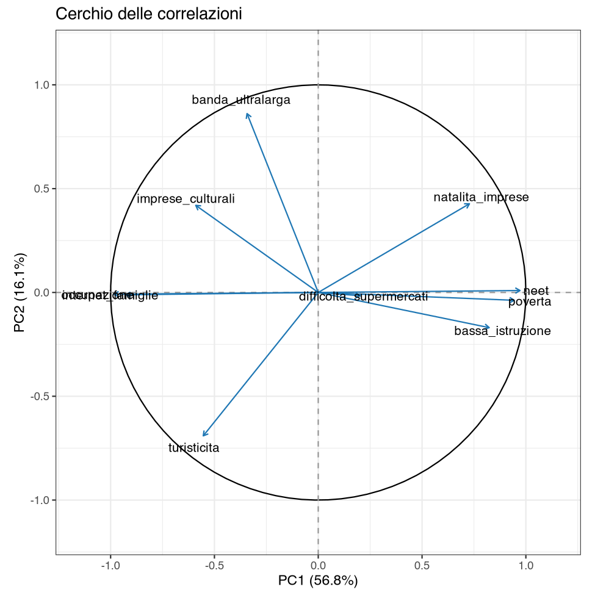
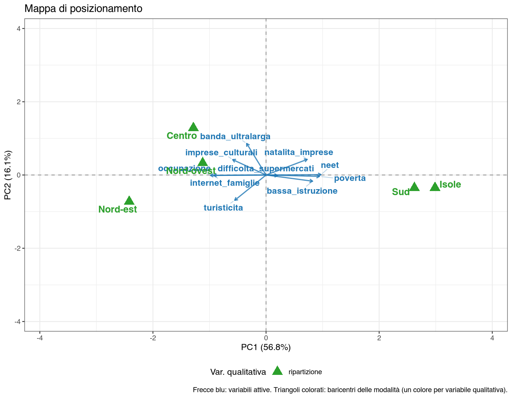
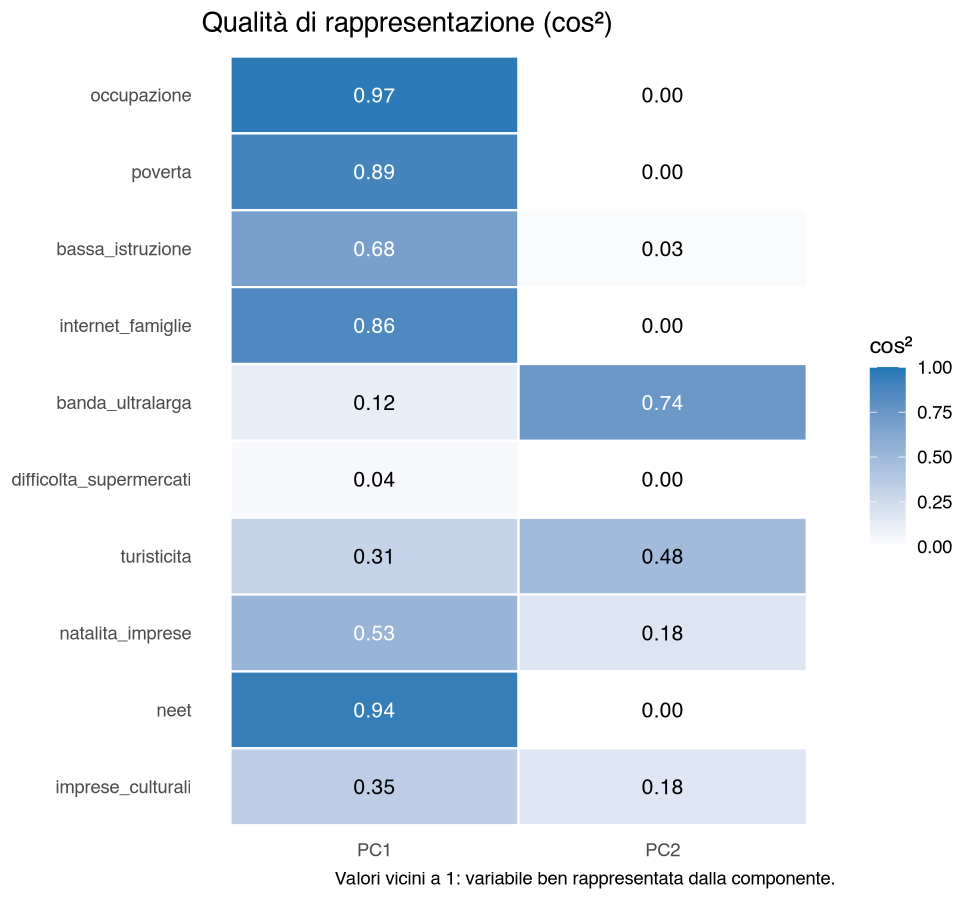

39 Caso reale — Dove conviene entrare: le regioni italiane
39.1 La situazione
Una catena deve decidere in quali regioni espandersi, e con quale formato. Gli indicatori disponibili sono decine; le regioni sono 21 (il Trentino-Alto Adige è diviso nelle due province autonome, come nella fonte Istat). Una tabella di 210 numeri non si legge, e classificare le regioni «Nord» e «Sud» è quello che l’azienda già fa.
La domanda è se esista una descrizione più informativa della geografia amministrativa, e quali dimensioni la compongano.
39.2 Passo 1 — Leggere le definizioni, non i titoli
Dieci indicatori scelti fra i 377 dell’archivio Istat, tutti disponibili per tutte le regioni nel 2022: tasso di occupazione, povertà relativa, istruzione, uso di Internet, banda ultra larga, difficoltà a raggiungere i supermercati, turisticità, natalità delle imprese, giovani che non studiano, non lavorano e non sono in formazione (NEET, Not in Education, Employment or Training), addetti nei settori culturali e creativi.
Su uno di questi c’è una trappola che vale la pena raccontare. L’indicatore 104 si intitola «Livello di istruzione della popolazione adulta», e chiunque lo inserirebbe in un’analisi aspettandosi che un valore alto significhi popolazione più istruita. La definizione dice un’altra cosa: «popolazione in età 25-64 anni che ha conseguito al più un livello di istruzione secondario inferiore». Un valore alto significa istruzione bassa.
Con il nome del titolo, la mappa si leggerebbe esattamente al contrario: le regioni con più laureati risulterebbero quelle meno istruite. Nel file la colonna si chiama quindi bassa_istruzione.
Di ogni indicatore che entra in un’analisi va letta la definizione, non il titolo, e va controllato il verso della scala. È lo stesso controllo che nel caso sintetico serviva per l’attributo prezzo (1 = caro, 10 = economico): lì era dichiarato nella documentazione del dataset, qui bisogna andarselo a cercare nei metadati Istat. Un asse letto al contrario non produce nessun errore di calcolo: produce una conclusione rovesciata, che è molto peggio.
39.3 Passo 2 — Dieci indicatori, quante dimensioni?
Gli indicatori sono fortemente ridondanti: il tasso di NEET e il tasso di occupazione correlano a \(-0{,}98\), la povertà e l’occupazione a \(-0{,}93\), l’uso di Internet e la povertà a \(-0{,}89\). Misurano cose diverse e raccontano la stessa cosa.
Menu: Analisi → AnalisiMercato → PCA → Analisi delle Componenti Principali — dieci variabili attive, identificativo regione, standardizzate, due componenti.
Autovalori e varianza spiegata
| Componente | Autovalore | % varianza | % cumulata |
|---|---|---|---|
| PC1 | 5,684 | 56,84 | 56,84 |
| PC2 | 1,608 | 16,08 | 72,93 |
| PC3 | 1,106 | 11,06 | 83,98 |
| PC4 | 0,577 | 5,77 | 89,76 |
| PC5 | 0,416 | 4,16 | 93,91 |
Coordinate delle variabili (loadings) e Contributi delle variabili (%)
| Variabile | PC1 | PC2 | ctr PC1 | ctr PC2 |
|---|---|---|---|---|
| occupazione | −0,984 | −0,009 | 17,03 | 0,01 |
| neet | 0,972 | 0,009 | 16,61 | 0,01 |
| poverta | 0,944 | −0,038 | 15,68 | 0,09 |
| internet_famiglie | −0,927 | −0,011 | 15,11 | 0,01 |
| bassa_istruzione | 0,823 | −0,170 | 11,93 | 1,79 |
| natalita_imprese | 0,728 | 0,427 | 9,33 | 11,35 |
| imprese_culturali | −0,590 | 0,420 | 6,13 | 10,94 |
| turisticita | −0,554 | −0,691 | 5,40 | 29,66 |
| banda_ultralarga | −0,343 | 0,861 | 2,07 | 46,14 |
| difficolta_supermercati | 0,202 | −0,016 | 0,72 | 0,02 |

PC1, la prima componente principale (56,8%), è il divario. Cinque indicatori con loading sopra 0,8 in valore assoluto: occupazione e uso di Internet da una parte, NEET, povertà e bassa istruzione dall’altra. Non è una scoperta — è la struttura nota dell’economia italiana — ma qui è misurata: una sola dimensione riassume il 57% di dieci indicatori diversi.
PC2, la seconda (16,1%), è un’altra cosa, e la si vede solo perché PC1 l’ha tolta di mezzo: banda ultra larga (\(+0{,}86\), quasi metà dell’asse) contro turisticità (\(-0{,}69\), un altro terzo). È l’opposizione fra territori connessi e urbani e territori a forte vocazione turistica, che taglia trasversalmente il divario Nord-Sud.
Un dettaglio che vale una discussione in aula: la natalità delle imprese ha loading \(+0{,}73\) su PC1, cioè sta dalla parte della povertà e dei NEET. Il tasso di natalità delle imprese è più alto dove l’economia è più debole. Una spiegazione plausibile, che la PCA da sola non può dimostrare, è che dove il lavoro dipendente manca l’apertura di piccole attività sia una risposta alla sua assenza: il tasso di natalità non distingue fra un’impresa che nasce per crescere e una che nasce per necessità. Un indicatore che a prima vista sembra di dinamismo economico, sulla mappa sta dall’altra parte.
39.4 Passo 3 — La mappa
La ripartizione geografica non entra nel calcolo: è una qualitativa supplementare, proiettata a posteriori.

I cinque baricentri si ordinano lungo PC1 dal Nord-est (a sinistra) fino a Sud e Isole (a destra); Centro e Nord-ovest stanno fra i due, quasi sovrapposti su PC1, con il Centro appena più a sinistra e più in alto su PC2. È la conferma esterna: la geografia amministrativa, tenuta fuori dal calcolo, si allinea con l’asse che gli indicatori hanno prodotto da soli.
Le posizioni delle singole regioni sono però più informative dei baricentri:
| Regione | PC1 | PC2 | Lettura |
|---|---|---|---|
| Calabria | +4,96 | −0,36 | l’estremo del primo asse |
| Sicilia | +4,06 | −0,21 | |
| Campania | +3,94 | +0,42 | |
| Bolzano/Bozen | −3,66 | −3,54 | economia forte e vocazione turistica estrema |
| Trento | −2,64 | −1,45 | |
| Friuli-Venezia Giulia | −2,25 | +0,94 | |
| Lazio | −0,76 | +2,48 | il più alto su PC2 (banda ultra larga), ma non fra i primi su PC1 |
| Lombardia | −1,64 | +1,66 | |
| Toscana | −1,73 | +1,60 |
Due letture che la ripartizione geografica non dà.
Bolzano è un caso a sé: la posizione più a sinistra su PC1 e insieme la più bassa su PC2, cioè la vocazione turistica più marcata d’Italia. Nella classificazione «Nord-est» sta insieme all’Emilia-Romagna, che su PC2 vale \(+0{,}62\): due economie forti con una struttura della domanda completamente diversa.
Il Lazio ha il valore più alto su PC2 (\(+2{,}48\)) pur stando a metà strada su PC1. Quasi metà del valore viene dalla banda ultra larga, di cui il Lazio ha la diffusione più alta d’Italia; quasi un terzo dalla natalità delle imprese, che come si è visto sta dalla parte dei territori deboli. Per una catena che valuta formati digitali — ordine online, consegna rapida — questo suggerisce una maggiore dotazione relativa di infrastruttura digitale e indica dove approfondire, ma non basta a dire quale regione sia più attrattiva: la mappa descrive il contesto, non la domanda. L’uso di Internet nelle famiglie, l’indicatore più vicino alla domanda digitale, è anzi un po’ più alto in Veneto (80,2% contro 79,2%) e pesa su PC1, non su PC2.
39.5 Passo 4 — I limiti, che qui sono la parte interessante
L’indicatore più vicino alla domanda aziendale è quello che il piano non rappresenta. La «difficoltà delle famiglie nel raggiungere i supermercati» — l’unico dei dieci che parli direttamente di accessibilità commerciale — ha un contributo dello 0,72% su PC1 e dello 0,02% su PC2, con coseno quadrato (cos²) 0,041 e 0,000. Sul piano non c’è: la sua variabilità sta quasi tutta sulla terza componente (loading 0,94), una dimensione a sé che la mappa a due assi non mostra.
Significa che la copertura della rete distributiva non segue il divario economico: ci sono territori poveri ben serviti e territori ricchi mal serviti. È un risultato utile, ma è anche un avvertimento sul perimetro della mappa: questi due assi descrivono il contesto socio-economico in cui si aprirebbe un punto vendita, non l’accessibilità del punto vendita stesso. Per quella domanda servono altri dati — rete esistente dei concorrenti, bacini di utenza, tempi di percorrenza — e la mappa non li contiene.

difficolta_supermercati (0,04 e 0,00) conferma che l’indicatore non è rappresentato sul piano. I cos² delle regioni sono nella tabella Coseni quadrati delle osservazioni (cos²).
E ci sono regioni di cui la mappa non dice niente. I cos² sul piano:
| Regione | cos² PC1 | cos² PC2 | Totale |
|---|---|---|---|
| Calabria | 0,911 | 0,005 | 0,915 |
| Sicilia | 0,908 | 0,002 | 0,910 |
| Lombardia | 0,440 | 0,455 | 0,895 |
| Campania | 0,875 | 0,010 | 0,885 |
| … | |||
| Liguria | 0,211 | 0,132 | 0,342 |
| Piemonte | 0,211 | 0,069 | 0,279 |
| Valle d’Aosta | 0,115 | 0,160 | 0,276 |
| Abruzzo | 0,074 | 0,001 | 0,074 |
L’Abruzzo compare vicino all’origine, e qui la lettura «regione media» è in gran parte giusta: la sua distanza al quadrato dal baricentro su tutti e dieci gli indicatori (\(0{,}422^2 / 0{,}074 \approx 2{,}4\), contro una media di 10) è fra le più piccole, e solo il Piemonte è più vicino alla media. Il cos² di 0,074 aggiunge che quel poco per cui l’Abruzzo si scosta dalla media non va nella direzione dei due assi, quindi la sua posizione sul piano non va commentata. Vicino all’origine si finisce sia perché si è medi su tutto, sia perché ci si distingue su dimensioni che il piano non rappresenta: per distinguere i due casi il cos² da solo non basta, serve la distanza dal baricentro (coordinata² / cos²). Il confronto fra Piemonte e Valle d’Aosta lo mostra: hanno quasi lo stesso cos² (0,279 e 0,276), ma la distanza al quadrato dal baricentro è circa 1 per il Piemonte e circa 14 per la Valle d’Aosta, che quindi si distingue molto, ma per lo più su dimensioni che il piano non mostra.
39.6 Che cosa ha aggiunto la PCA
- Ha ridotto dieci indicatori a due dimensioni con un nome: la forza socio-economica e l’opposizione fra connettività urbana e vocazione turistica.
- Ha separato due informazioni che la classificazione per ripartizione tiene insieme: Bolzano ed Emilia-Romagna sono entrambe «Nord-est», ma sulla seconda dimensione sono molto distanti (Bolzano ne è l’estremo inferiore, l’Emilia-Romagna sta poco sopra lo zero).
- Ha mostrato che un indicatore dal nome rassicurante — la natalità delle imprese — sta dalla parte dei territori deboli.
- Ha detto che cosa non sa dire: l’accessibilità commerciale non è sul piano, e alcune regioni non sono descritte da questi assi.
39.7 Le funzioni usate
| Passo | Analisi | Opzioni principali |
|---|---|---|
| Verificare gli indicatori | metadati Istat | definizione e verso di ogni scala |
| Ridurre | Analisi delle Componenti Principali | 10 indicatori; standardizzate; 2 componenti; id regione |
| Nominare gli assi | (stessa analisi) | loadings, contributi, cerchio delle correlazioni |
| Validare dall’esterno | (stessa analisi) | ripartizione come qualitativa supplementare; mappa |
| Verificare la qualità | (stessa analisi) | Mostra tabella contributi/coseni² delle osservazioni attiva; Numero massimo di osservazioni da mostrare = 21 (con il default 20 resta fuori proprio l’Abruzzo) |
39.8 Da portare nel report
- La definizione esatta di ogni indicatore, con l’anno e il verso della scala.
- Quanti indicatori si sono scelti fra quanti disponibili, e con quale criterio.
- La varianza spiegata dal piano, accanto alla mappa.
- Gli indicatori che non contribuiscono: sono un risultato, non uno scarto.
- Le unità con cos² basso, escluse dal commento.
- Il perimetro della conclusione: che cosa la mappa descrive e che cosa no.